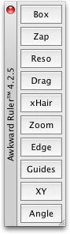

|
|
In this chapter, we will review some of the platform-specific options available to Qt programmers. We begin by looking at how to access native APIs such as the Win32 API on Windows, Carbon on Mac OS X, and Xlib on X11. We then move on to explore the ActiveQt extension, showing how to use ActiveX controls within Qt/Windows applications and how to create applications that act as ActiveX servers. In the last section, we explain how to make Qt applications cooperate with the session manager under X11.
In addition to the features presented here, Trolltech offers several platform-specific Qt Solutions, including the Qt/Motif and Qt/MFC migration frameworks to ease the migration of Motif/Xt and MFC applications to Qt. A similar extension for Tcl/Tk applications is provided by froglogic, and a Microsoft Windows resource converter is available from Klarälvdalens Datakonsult. See the following web pages for details:
For embedded development, Trolltech offers the Qtopia application platform, which we cover in Chapter 24.
Some Qt functionality that might have been expected to be platform-specific is available in a platform-independent manner. For example, there is a Qt Solution for creating services (daemons) on Windows, Unix, and Mac OS X.
Qt's comprehensive API caters for most needs on all platforms, but in some circumstances, we may want to use the underlying platform-specific APIs. In this section, we will show how to use the native APIs for the different platforms supported by Qt to accomplish particular tasks.
On every platform, QWidget provides a winId() function that returns the window ID or handle. QWidget also provides a static function called find() that returns the QWidget with a particular window ID. We can pass this ID to native API functions to achieve platform-specific effects. For example, the following code uses winId() to move the title bar of a tool window to the left using native Mac OS X (Carbon) functions (see Figure 23.1):
#ifdef Q_WS_MAC
ChangeWindowAttributes(HIViewGetWindow(HIViewRef(toolWin.winId())),
kWindowSideTitlebarAttribute,
kWindowNoAttributes);
#endif

On X11, here's how we would modify a window property:
#ifdef Q_WS_X11
Atom atom = XInternAtom(QX11Info::display(), "MY_PROPERTY", False);
long data = 1;
XChangeProperty(QX11Info::display(), window->winId(), atom, atom,
32, PropModeReplace,
reinterpret_cast<uchar *>(&data), 1);
#endif
The #ifdef and #endif directives around the platform-specific code ensure that the application will still compile on other platforms.
For a Windows-only application, here's an example of how we can use GDI calls to draw on a Qt widget:
void GdiControl::paintEvent(QPaintEvent * /* event */)
{
RECT rect;
GetClientRect(winId(), &rect);
HDC hdc = GetDC(winId());
FillRect(hdc, &rect, HBRUSH(COLOR_WINDOW + 1));
SetTextAlign(hdc, TA_CENTER | TA_BASELINE);
TextOutW(hdc, width() / 2, height() / 2, text.utf16(), text.size());
ReleaseDC(winId(), hdc);
}
For this to work, we must also reimplement QPaintDevice::paintEngine() to return a null pointer and set the Qt::WA_PaintOnScreen attribute in the widget's constructor.
The next example shows how to combine QPainter and GDI calls in a paint event handler using QPaintEngine's getDC() and releaseDC() functions:
void MyWidget::paintEvent(QPaintEvent * /* event */)
{
QPainter painter(this);
painter.fillRect(rect().adjusted(20, 20, -20, -20), Qt::red);
#ifdef Q_WS_WIN
HDC hdc = painter.paintEngine()->getDC();
Rectangle(hdc, 40, 40, width() - 40, height() - 40);
painter.paintEngine()->releaseDC();
#endif
}
Mixing QPainter and GDI calls like this can sometimes lead to strange results, especially when QPainter calls occur after GDI calls, because QPainter makes some assumptions about the state of the underlying drawing layer.
Qt defines one of the following four window system symbols: Q_WS_WIN, Q_WS_X11, Q_WS_MAC, or Q_WS_QWS (Qtopia). We must include at least one Qt header before we can use them in applications. Qt also provides preprocessor symbols to identify the operating system:
Q_OS_AIX
Q_OS_BSD4
Q_OS_BSDI
Q_OS_CYGWIN
Q_OS_DGUX
Q_OS_DYNIX
Q_OS_FREEBSD
Q_OS_HPUX
Q_OS_HURD
Q_OS_IRIX
Q_OS_LINUX
Q_OS_LYNX
Q_OS_MAC
Q_OS_NETBSD
Q_OS_OPENBSD
Q_OS_OS2EMX
Q_OS_OSF
Q_OS_QNX6
Q_OS_QNX
Q_OS_RELIANT
Q_OS_SCO
Q_OS_SOLARIS
Q_OS_ULTRIX
Q_OS_UNIXWARE
Q_OS_WIN32
Q_OS_WIN64
We can assume that at most one of these will be defined. For convenience, Qt also defines Q_OS_WIN when either Win32 or Win64 is detected, and Q_OS_UNIX when any Unix-based operating system (including Linux and Mac OS X) is detected. At run-time, we can check QSysInfo::WindowsVersion or QSysInfo::MacintoshVersion to distinguish between different versions of Windows (2000, ME, etc.) or Mac OS X (10.2, 10.3, etc.).
In addition to the operating system and window system macros, there is also a set of compiler macros. For example, Q_CC_MSVC is defined if the compiler is Microsoft Visual C++. These can be useful for working around compiler bugs.
Several of Qt's GUI-related classes provide platform-specific functions that return low-level handles to the underlying object. These are listed in Figure 23.2.
| Windows | |
| HCURSOR | QCursor::handle() |
| HDC | QPaintEngine::getDC() |
| HDC | QPrintEngine::getPrinterDC() |
| HFONT | QFont::handle() |
| HPALETTE | QColormap::hPal() |
| HRGN | QRegion::handle() |
| HWND | QWidget::winId() |
| X11 | |
| Cursor | QCursor::handle() |
| Font | QFont::handle() |
| Picture | QPixmap::x11PictureHandle() |
| Picture | QWidget::x11PictureHandle() |
| Pixmap | QPixmap::handle() |
| QX11Info | QPixmap::x11Info() |
| QX11Info | QWidget::x11Info() |
| Region | QRegion::handle() |
| Screen | QCursor::x11Screen() |
| SmcConn | QSessionManager::handle() |
| Window | QWidget::handle() |
| Window | QWidget::winId() |
On X11, QPixmap::x11Info() and QWidget::x11Info() return a QX11Info object that provides various pointers or handles, such as display(), screen(), colormap(), and visual(). We can use these to set up an X11 graphics context on a QPixmap or QWidget, for example.
Qt applications that need to interface with other toolkits or libraries frequently need to access the low-level events (XEvents on X11, MSGs on Windows, EventRef on Mac OS X, QWSEvents on QWS) before they are converted into QEvents. We can do this by subclassing QApplication and reimplementing the relevant platform-specific event filter, one of x11EventFilter(), winEventFilter(), macEventFilter(), and qwsEventFilter(). Alternatively, we can access the platform-specific events that are sent to a given QWidget by reimplementing one of x11Event(), winEvent(), macEvent(), and qwsEvent(). This can be useful for handling certain types of events that Qt normally ignores, such as joystick events.
For more information about platform-specific issues, including how to deploy Qt applications on different platforms, see http://doc.trolltech.com/4.3/winsystem.html.
|
|
| Converted from CHM to HTML with chm2web Pro 2.85 (unicode) |